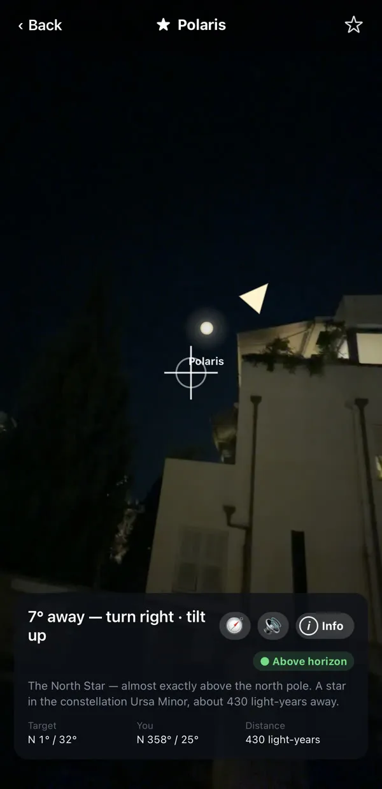
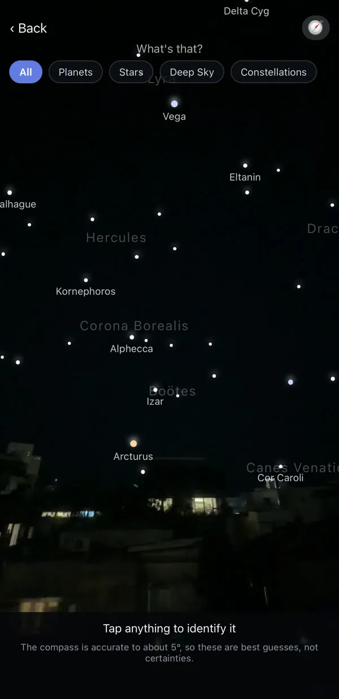
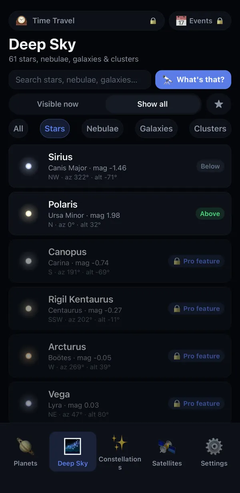
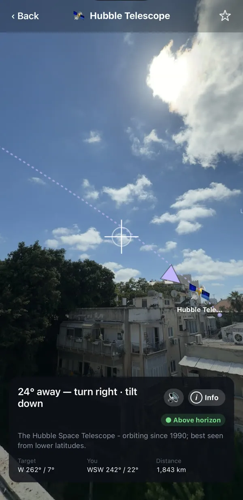
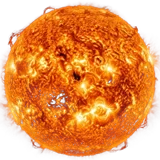

十秒钟，找到土星。
举起手机，跟着箭头走。每一颗行星、恒星和卫星，都用你的语言叫出名字。
试一试。在星空中移动。
应用就是这样引导你的：虚线指出方向，对准目标时圆环会变成绿色。
把手机指向天空。认出你看到的星星。
Planet Pointer 引导相机找到任何行星、恒星或卫星，并为天空中的每一点亮光命名。
瞄准。跟随。锁定。
一支引导箭头，一条虚线，还有对准目标时变绿的圆环。


星座
绘制在真实的星空上，还有它们背后的神话。
你的位置绝不会离开手机。
所有计算都在设备上完成。离线可用，无需账号。
说你的语言
内置且免费。Pro 再加 66 种语言。
一次付费，永久使用。
这是献给我们最早一批观星者的介绍价，包含之后的所有更新。没有订阅。太阳、月亮和行星始终免费。
头顶有什么。
行星、恒星、星系、星云、星团和卫星。应用都能引导你找到。
深空奇观
恒星之外那些暗淡而遥远的天体：发光的气体云、其他星系，以及一同诞生的星群。

卫星，实时追踪
国际空间站、哈勃望远镜、中国天宫空间站、星链、气象卫星以及以色列的阿莫斯卫星。实时追踪，并告诉你每一颗下次从你头顶经过的时间。


太阳、月亮和 7 颗行星
每一颗此刻在哪里、有多亮、有多远。
最亮的恒星
天狼星、织女星、参宿四、北极星，以及其他你真正会注意到的星星。
星座
全部绘制在实时星空上，许多还配有形状背后的神话。
大家常问的问题。
Planet Pointer 免费吗？
免费。相机引导、太阳、月亮、七大行星、国际空间站和哈勃望远镜永久免费，每个类别还有两个著名天体免费。Pro 是一次性购买（首发价：4.99 美元），可解锁所有恒星、星座、深空天体和卫星。没有订阅。
没有网络能用吗？
可以。所有位置都在你的手机上计算，所以在沙漠或海上也能使用。网络只用于更新卫星轨道和下载额外语言。
应用会收集我的位置吗？
不会。你的位置只在手机上用来引导你看向天空，不会被记录，也不会发送到任何地方，而且无需账号。
准确度如何？
行星和恒星的位置精确到零点几度。限制来自手机指南针，精度约为五度，因此识别模式会告诉你它有多确定，而不是随意猜测。应用内置“8 字形”校准。
能看到国际空间站吗？
能。国际空间站会被实时追踪，应用会引导你找到它，并列出接下来从你头顶经过的时间，包括是否肉眼可见。
有 iPhone 版本吗？
有。Planet Pointer 已在 App Store 上架 iPhone 版，也在 Google Play 上架 Android 版。
79 种语言。很可能就有你的。
每个界面、每颗行星、每个星座，都已翻译。